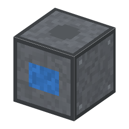

説明
①子ども 亜鉛と銅を別々の液に入れて、素焼きのつぼで分けた電池。出力が落ちない。
②学生 ソーダ石灰ガラス6＋銅＋土器のつぼ（素焼きの仕切り）で作る。上に亜鉛のインゴット、下に硫酸銅を入れると発電（10 W で一定、亜鉛と硫酸銅1つで2分）。ボルタの電堆とちがい、だんだん下がらない。
③大人 負極：Zn → Zn2+ + 2e-、正極：Cu2+ + 2e- → Cu。正極では水素でなく銅が出るので、泡がたまらない（分極しない）。素焼きの壁はイオンだけ通して、2つの液が混ざるのを防ぐ。電圧は約1.1V。
④ガチ 1836年イギリスのダニエルが作った。電圧が安定していたので、電信（[15-]）の電源として広く使われた。
作り方
使い道
（このアイテムを使うレシピは無い）